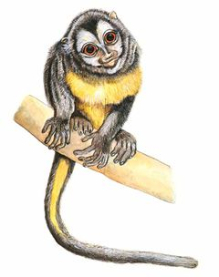
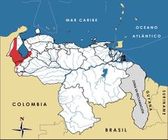

Aotus lemurinus
| Mono de noche del occidente | |
|---|---|
|  | |
| Riesgo de extinción | |
 Vulnerable (UICN) | |
| Clasificación científica | |
| Reino: | Animalia |
| Filo: | Chordata |
| Clase: | Mammalia |
| Orden: | Primates |
| Familia: | Aotidae |
| Género: | Aotus |
| Especie: | Aotus griseimembra |
| Nombre binomial | |
|
Aotus griseimembra Geoffroy, 1846 | |
| Distribución | |
|
 Mapa de distribución de Aotus griseimembra | |
Contenido
Información de Evaluación
- Categoría y Criterio Regional: Vulnerable A2cd
- Fecha de Evaluación Regional: 2015
- Evaluadores: Jesús Morales-Campos y Ariany García-Rawlins
- Categoría y Criterio Global: Vulnerable A2c
Justificación
Evaluaciones Previas
1999: Casi Amenazado (NT)
2008: Vulnerable (VU)
Información General
Nombres comunes
Mono de noche del occidente, mono de noche, mono cararrayada, cararrayada, mono cocuí, mono nocturno, baakbora (barí), kogchigbaa (barí), grey-handed night monkey, grey-legged night monkey (Linares 1998, Lizarralde 2002, Morales-Jiménez y Link 2008).
Notas taxonómicas
Sinónimos
Descripción
Es un primate de pequeño tamaño (~1 kg) con cabeza redondeada y grandes globos oculares rodeados por un parche blanco que cubre el rostro hasta la boca. Su pelaje es lanoso, corto y denso. Es de color grisáceo en la región dorsal y amarillento anaranjado, con visos de beige, en la región ventral. Su cola es proporcionalmente larga y no prensil. Nocturno, insectívoro, frugívoro y único género de mono nocturno del mundo. Anteriormente esta especie se había evaluado como Aotus griseimembra.
Distribución
La distribución de Aotus lemurinus en el país se restringe únicamente al noroccidente de Venezuela, en específico a la zona oeste, sur y suroeste de la cuenca del lago de Maracaibo. Habita en bosques siempreverdes montanos y de piedemonte en la zona oeste, sur y suroeste de la citada cuenca, asociados a las vertientes orientales y occidentales de la cordillera de los Andes del país, así como en bosques estacionalmente inundados, entre 70 y 1200 m de altitud (Bodini y Pérez-Hernández 1987, Bodini 1989, Emmons 1990, Linares 1998, Defler 2003, Morales-Jiménez y Link 2008, Rodríguez, J. P. y Rojas-Suárez 2008). Es una extensión de bosques inferior a los 13.000 km2 (D. Lew com. pers.) que se encuentran muy fragmentados en toda la región. El mono de noche habita también en bosques perturbados o en estadios sucesionales de tempranos a intermedios (Morales-Jiménez y Link 2008), lo que evidencia cierta tolerancia a hábitats intervenidos (Rodríguez, J. P. y Rojas-Suárez 2008). Su distribución global se restringe a Colombia y Venezuela.
- Sistema: Terrestre
- Bioregión:
- Intervalo altitudinal (m): 70-1200
- Endémica: No
Situación
No se cuenta con estudios de abundancia poblacional sobre A. griseimembra en Venezuela. Sin embargo, debido al conocimiento que existe en relación al estado de los bosques de la región donde está presente, se infiere que al menos 30% de su hábitat ha desaparecido en las últimas décadas. Lizarralde (2002) reporta que los Barí consumen monos de noche (si bien no es un primate de preferencia). B. Urbani (obs. pers.) recibió reportes sobre bajas densidades naturales de monos nocturnos en las cuencas de los ríos Socuy y Guasare de la sierra de Perijá. Gran parte de su distribución está a lo largo de la frontera colombo-venezolana en la región de la cuenca del Catatumbo, donde han existido diversos conflictos históricos, dificultando la propuesta y ejecución de programas de investigación y conservación de la especie por parte de institutos y academias del país. El escaso conocimiento que se posee sobre este mamífero hace más compleja su situación y por lo tanto la prevención y control de sus amenazas (Rodríguez, J. P. y Rojas-Suárez 2008). A escala internacional se considera Vulnerable (IUCN 2014). En nuestro país los primates no figuran en los calendarios cinegéticos, por lo que su caza está prohibida (Rodríguez, J. P. y Rojas-Suárez 2008). Parte de su hábitat en la región está resguardado por las áreas protegidas estrictas del país, en específico, por los parques nacionales Sierra de Perijá y Ciénagas de Juan Manuel (Catatumbo).
- EOO (km2): Temporalmente sin información
- AOO (km2): Temporalmente sin información
- Tendencia Poblacional: Decreciendo
Amenazas
La deforestación histórica en la zona suroeste del lago de Maracaibo es una de las mayores del país y en la actualidad solo existen pocos parches de bosques remanentes en matrices de tierras agrícolas asociadas al piedemonte de los Andes venezolanos (Portillo-Quintero et al. 2012). Las únicas áreas de bosques continuos poco intervenidos se encuentran restringidas a la sierra de Perijá y las ciénagas de Juan Manuel. Los bosques premontanos de la zona son considerados uno de los frentes de deforestación principales en la cuenca del lago de Maracaibo (Portillo-Quintero et al. 2012). Por ello se considera que la especie está especialmente amenazada por la destrucción y el deterioro de su hábitat, además de que le impactan los efectos de la cacería como fuente alimenticia y su uso como mascota.
Conservación
Para su protección es necesario evaluar la viabilidad de sus poblaciones silvestres, erradicar la cacería y su uso ilegal como mascota y otros fines, así como promover programas de concientización, educación ambiental y considerar la cría en cautiverio para su reintroducción (Rodríguez, J. P. y Rojas-Suárez 2008). La cacería y el tráfico ilegal de fauna en los estados Zulia y Táchira, que incluye primates, debe ser penalizada según la legislación vigente. De igual manera, se requiere afianzar su conservación en los parques nacionales donde se encuentran distribuidos, en particular con el control sobre la cacería y la extracción ilegal de madera. A nivel internacional está incluida en el Apéndice II de la Convención sobre el comercio internacional de especies amenazadas de fauna y flora silvestres (Cites 2014).
Autorías
Autores originales
Carlos Portillo-Quintero y Bernardo Urbani
Colaboradores
Ilustrador
Astolfo Mata
Referencias
- Bodini, R. (1989). Distribución geográfica y conservación de primates sub-humanos en Venezuela. Páginas: 101-114. En: Saavedra, C. J., Mittermeier, R. A. y Santos, I. B. (Eds.). La primatología en Latinoamérica: anales del Simposio de Primatología del IX Congreso Latinoamericano de Zoología, 9-15 oct. 1983, Arequipa, Perú. World Wildlife Fund-US. Washington, D. C., USA.
- Bodini, R. y Pérez-Hernández, R. (1987). Distribution of the species and subspecies of cebids in Venezuela. Páginas: 231-244. En: Patterson, B. D. y Timm, R. M. (Eds.). Studies in Neotropical Mammalogy. Fieldiana Zoology, n.s., 39. Field Museum of Natural History. Chicago.
- Cites. (2014). Apéndices I, II y III (válidos desde el 14 de septiembre de 2014). Convención sobre el Comercio Internacional de Especies Amenazadas de Fauna y Flora Silvestres (CITES). 47 pp.
- Defler, T. (2003). Primates de Colombia. Conservación Internacional-Colombia. Bogotá, Colombia. 543 pp.
- Emmons, L. H. (1990). Neotropical Rainforest Mammals, a field guide. University of Chicago Press. Chicago y Londres. 281 pp.
- IUCN (2014). The IUCN Red List of Threatened Species. Version 2014.3. Accesible en www.iucnredlist.org.
- Linares, O. J. (1998). Mamíferos de Venezuela. Sociedad conservacionista Audubon. Caracas. 691 pp.
- Lizarralde, M. (2002). Ethnoecology of monkeys among the Barí of Venezuela: Perception, Use, and Conservation. Páginas: 85-100. En: Fuentes, A. y Wolfe, L. D. (Eds.). Primates Face to Face: The Conservation Implications of Human-Nonhuman Primate Interconnections. Cambridge University Press. Cambridge.
- Morales-Jiménez, A. L. y Link, A. (2008). Aotus griseimembra. The IUCN Red List of Threatened Species. Version 2013.2. Disponible en www.iucnredlist.org, consultada el 19/01/2014.
- Portillo-Quintero, C., Larreal, J., Gonzalez, I., Sanchez, A. y Valbuena, C. (2012). Forest cover and deforestation patterns in the Northern Andes (Lake Maracaibo Basin): a synoptic assessment using MODIS and Landsat imagery. Applied Geography 35: 152-163.
- Portillo-Quintero, C. y Urbani, B. (2015). Mono de noche occidental,Aotus lemurinus. En: J.P. Rodríguez, A. García-Rawlins y F. Rojas-Suárez (eds.) Libro Rojo de la Fauna Venezolana. Cuarta edición. Provita y Fundación Empresas Polar, Caracas, Venezuela. Recuperado de: animalesamenazados.provita.org.ve/content/mono-de-noche-occidental Vie, 09/03/2018 - 07:55
- Rodríguez, J. P. y Rojas-Suárez, F. (1999). Libro Rojo de la Fauna Venezolana, segunda edición. PROVITA, Fundación Polar. Caracas. 444 pp.
- Rodríguez, J. P. y Rojas-Suárez, F. (Eds.) (2008). Libro Rojo de la Fauna Venezolana, tercera edición. Provita y Shell Venezuela, S. A. Caracas, Venezuela. 364 pp.